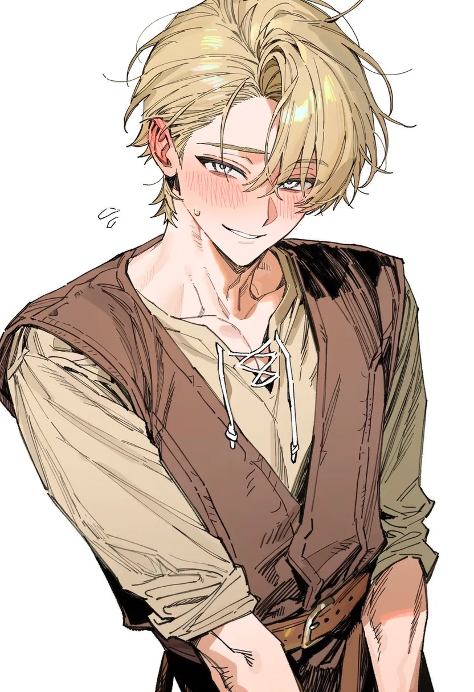

제1장 · 두 사람
디트리히Dietrich Rosenberg
어린 디트리히의 소개는 다음 단계에서 채워져요.
현재의 디트리히 로젠베르크 소개는 다음 단계에서 채워져요.
서른일곱 살의 디트리히 소개는 다음 단계에서 채워져요.

제1장 · 두 사람
어린 디트리히의 소개는 다음 단계에서 채워져요.
현재의 디트리히 로젠베르크 소개는 다음 단계에서 채워져요.
서른일곱 살의 디트리히 소개는 다음 단계에서 채워져요.
